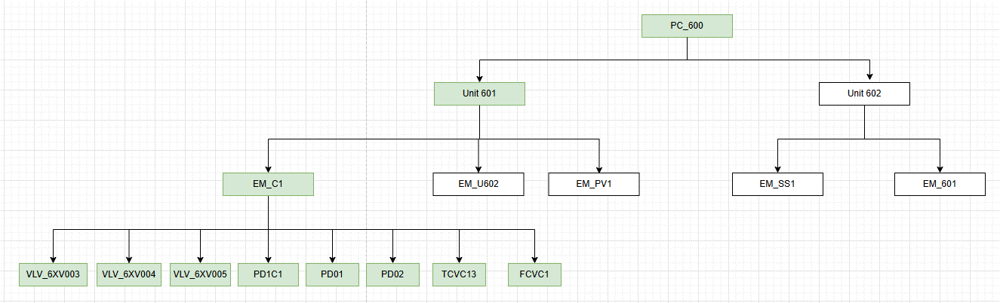
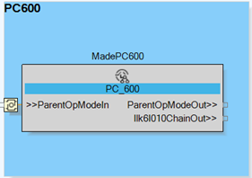

To start with the development process, let’s define a top-level object. This object is intended to encapsulate the implementation of the proposed use case.
This top-level object will then contain all the following children units, equipment modules and control modules, defined in Hierarchical Aggregation of Functional Sub-Systems topic:

Then let’s create a CAT object of type SubApp and named PC_600.
Additionally, let’s follow the ISA88 recommendations for application modeling for this use case. Therefore, the PC_600 CAT object is expected to be aligned with the definition of the Process Cell, as defined in the Hierarchical Aggregation of Functional Sub-Systems topic.

After having successfully identified the top object, let’s now define the internal structure of the PC_600 CAT object.
To enhance the creation efficiency of CAT objects, it is recommended to use a generic CAT template with a predefined internal structure. This template can be copied and renamed for implementation in various applications, as done here.
As the design guideline suggests, let’s define all constructive components of the PC_600 CAT object:
IT / OT convergence